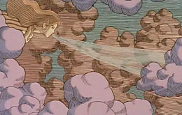
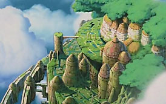

Tenkuu no Shiro Rapyuta
1986 · Película · 124 minutos
Dirección: Hayao Miyazaki
Música: Joe Hisaishi
Guión: Hayao Miyazaki Producción: Isao Takahata
Laputa: Castillo en el cielo, primera película plenamente Ghibli, sobre idea y guión de Miyazaki. Es la preferida de los que aman "las de acción". Dos jóvenes (Shita y Pazu) van al encuentro de una isla volante, obra de una civilización aparentemente extinguida. Enfrente tienen a Muska, el villano que aspira a dominar la isla, y la banda de piratas que sólo buscan enriquecerse.
Ambientación: población minero, lugar indeterminado y época ambigua, con tintes retrofuturistas: se diría una Europa siglo XIX (en particular, se dice que Miyazaki se inspiró en una visita a Gales) con artefactos imaginarios (volantes, sobre todo), de un futuro que no fue.
Personajes:
En Shita (o Sheeta, o Zita) tenemos nuevamente a la heroína Miyazaki.
Algo más dulce o tímida que Nausicaä, Shita pertenece a la estirpe
de los laputianos, los que construyeron Laputa, la isla volante en cuya
existencia legendaria pocos creen.
Posee como reliquia de familia una piedra de un cristal especial, anti-gravedad,
característico de Laputa, del cual el gobierno, empujado por la ambición de Muska, quiere
apoderarse.
Pazu es un joven huérfano, minero, que se cruza en el camino de Sheeta. El compañero varón de rigor, sencillo, valiente y leal. Él también está ligado a Laputa, porque su padre, aviador, había llegado a ver la isla en una tormenta; burlado por los incrédulos, murió sin lograr confirmar su visión, y su hijo espera poder hacerlo por él.
{kind=link}
Muska es el prototipo del malo de las películas de acción. Sólo quiere apoderarse de Laputa para dominar el mundo; se apoya en su propia estirpe, real como la de Shita. Finge colaborar con el gobierno para usar los poderes militares. Si exceptuamos algunos personajes pre Ghibli (el conde en Lupin; Lepka en Conan) es el único personaje definitivamente malvado de la obra de Miyazaki.
Dola y su banda. La madre y jefa de los piratas del aire, más salvaje y audaz que sus hijos. Si Muska es el prototipo del malo a secas, estos piratas son el prototipo del malo simpático, que al correr de los sucesos deviene en aliado.
Los robots: especie de guardias de Laputa, protegen la ciudad, y reconocen la realeza de la portadora de la piedra. Dos de ellos (uno en tierra y uno en la isla) tienen especial protagonismo.
{kind=link}
Personajes secundarios: El tío Pom, minero anciano, muy compenetrado con los secretos de las piedras y conocedor de las sabidurías antiguas. El jefe de máquinas del establecimiento, y jefe de Pazu; de exterior rudo, protege a Pazu (él y su esposa parecen oficiar de padres postizos) y no duda en boxear con los piratas para salvar a Shita. El general del cuerpo militar, tosco y de pocas luces, es llevado de las narices por Muska.
img width="212" height="127" src="212240_m.jpg" class="id" align="right" />
La trama puede dividirse en cuatro partes:
1. (0:00-0:36) La persecución de Shita : perseguida por Muska y los piratas,
auxiliada por Pazu y los pobladores, finalmente capturada.
2. (0:36-1:01) El rescate de Shita: con la ayuda de los piratas y del robot,
Shita es liberada. Pero Muzka tiene la piedra.
3. (1:01-1:22) El viaje a Laputa: los piratas con Pazu y Shita por un lado,
Muzka con los militares por el otro, se encaminan a Laputa.
4. (1:22-1:57) La lucha en Laputa: los piratas y Shita son apresados,
Muska revela sus intenciones...
Por obvias razones, las versiones en español eluden el nombre
de la isla en el título, que pasa a ser simplemente
"El castillo en el cielo". Y cuando hay que nombrarla dicen
algo como "Lapuntu".
El nombre original, "Laputa", proviene de "Los cuentos de Gulliver",
de Swift. Y según parece, este (a diferencia de Miyazaki)
no ignoraba cómo suena esa palabra para los hispano hablantes.
La película tiene un claro precedente en "Conan, el niño del futuro", por su espíritu de aventura y sobre todo por la pareja protagonista.
En lo técnico, la película muestra progresos evidentes. Más
seguro el dibujo y la animación; notable la paleta de colores.

La música de Hisaishi tiene varios puntos en común con Nausicaä,
también con algunas partes sintetizadas y otras de sabor clásico;
y éstas son las más felices. El tema principal, aunque de estructura
algo demasiado convencional, es efectivo.
En los títulos iniciales aparece
acompañando una bella secuencia de dibujos, como grabados antiguos futuristas.
Y reaparece al final, cantado con una letra del propio Miyazaki.
Hisaishi remozó la banda sonora para la reedición en EEUU de Disney.
Laputa parece representar, dentro de la obra de Miyazaki, lo más cercano a la esencia de lo que un lector infanto-juvenil busca en la "novela  de aventuras". Dos adolescentes (varón y mujer, solos, sin familia) cuyas vidas se cruzan en el inicio de una búsqueda: una isla legendaria en el cielo. Hace falta cierto espíritu infantil para entrar en una historia de este género, y yo no estoy seguro de tenerlo; de hecho, no está entre mis preferidas. En aquel sentido, y sin ser la obra más fantástica de Miyazaki, quizás sea la más escapista, y la más a propósito para provocar una identificación con las imaginaciones juveniles; cosa frecuente en el anime, pero no tanto en Miyazaki. No nos meteremos acá a discernir los buenos y malos sentidos del adjetivo "escapista"; pero sí anotamos esta leve paradoja: cerca del final, Shita cita una canción antigua ( "Echa tus raíces en la tierra, vive en armonía con el viento, planta tus semillas en invierno y disfruta de las aves en primavera") que parece inculpar a la creación de la isla volante de una especie de escapismo, contrario a la naturaleza humana.
{kind=link}
Algunas escenas y notas sueltas:
{kind=link}
{kind=link}
Trivia
{kind=link}